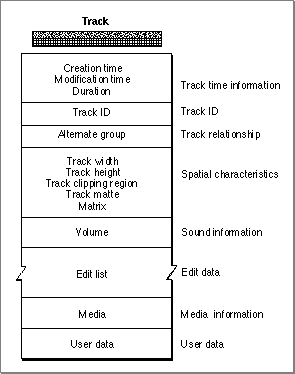

Track Characteristics
A QuickTime track is represented as a private data structure. Your application never works with individual fields in that data structure. Rather, the Movie Toolbox provides functions that allow you to work with a track's characteristics. Figure 2-10 shows the characteristics of a QuickTime track.Figure 2-10 Track characteristics

As with movies, each track has some state information, including a creation time and a modification time. These times are expressed in standard Macintosh time format, representing the number of seconds since midnight, January 1, 1904. The creation time indicates when the track was created. The modification time indicates when the track was last modified and saved.
Each track has its own duration value, which is expressed in the time scale of the movie that contains the track.
As has been discussed, movies can contain more than one track. In fact, a movie can contain more than one track of a given type. You might want to create a movie with several sound tracks, each in a different language, and then activate the sound track that is appropriate to the user's native language. Your application can manage these collections of tracks by assigning each track of a given type to an alternate group. You can then choose one track from that group to be enabled at any given time. You can select a track from an alternate group based on its language or its playback quality.
A track's playback quality indicates its suitability for playback in a given environment. All tracks in an alternate group should refer to the same type of data.A track's display characteristics are specified by a number of elements, including track width, track height, a transformation matrix, and a clipping region. See "Spatial Properties," which begins on page 2-15, for a complete description of these elements and how they are used by the Movie Toolbox.
Each track has a current volume setting. This value controls how loudly the track plays relative to the movie volume.
Perhaps most important, tracks contain a media edit list. The edit list contains entries that define how the track's media is to be used in the movie that contains the track. Each entry in the edit list indicates the starting time and duration of the media segment, along with the playback rate for that segment.
Each track contains its associated media. See the next section for more information about media structures and their characteristics.
The Movie Toolbox allows your application to store its own user data along with a track. You define the format and content of these data objects. The Movie Toolbox provides functions that allow you to set and retrieve a track's user data. This data is saved with the track when you save the movie.